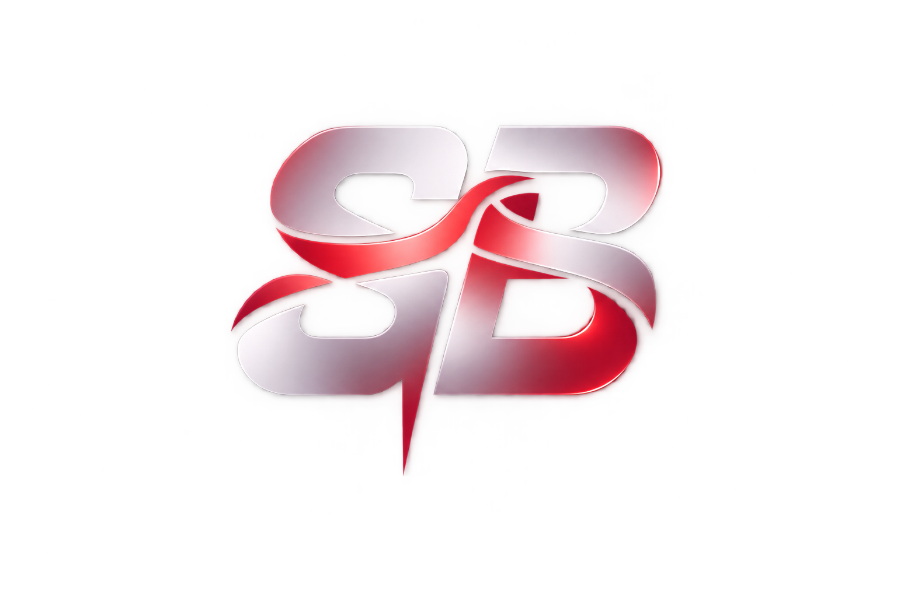
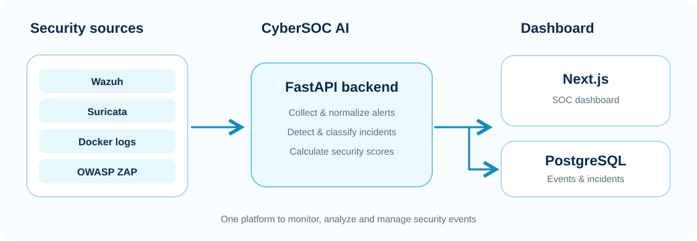

◎
Centralize
Collect events and findings from multiple security sources and monitored applications.

CyberSOC AISECURITY ENGINEERING · 2026
A centralized platform that collects, normalizes and analyzes security events from multiple sources, detects suspicious activity, classifies incidents and supports informed response.
01 / PROJECT OVERVIEW
CyberSOC AI brings security alerts together in one platform to help teams detect threats, manage incidents and monitor application security.
Collect events and findings from multiple security sources and monitored applications.
Normalize events, classify incidents, detect anomalies and calculate security scores.
Review incidents, consult recommendations and generate security reports.
02 / SYSTEM DESIGN
Security tools send alerts to CyberSOC AI. The platform analyzes them, stores incidents and displays the results in a simple dashboard.

03 / CAPABILITIES
Integrates supported Wazuh alerts, Suricata events, Docker logs and ZAP findings.
Classifies findings by severity and tracks incidents through their lifecycle.
Provides global and per-application security indicators to help prioritize attention.
Uses an Isolation Forest model as a complementary detection capability.
Offers security guidance and generates PDF reports; Gemini integration is optional.
Tailored views for administrators, SOC analysts and read-only users.
04 / PRODUCT WALKTHROUGH
Actual project screenshots showing the dashboard, incident workflows, integrations and reporting. Select an image to enlarge it.
05 / DOCUMENTATION
The internship report documents the context, requirements, architecture, implementation, tests and project outcomes. The showcase summarizes the work; the report provides the technical depth.
Open Internship Report (PDF) ↗